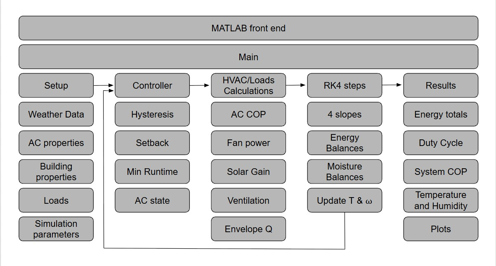
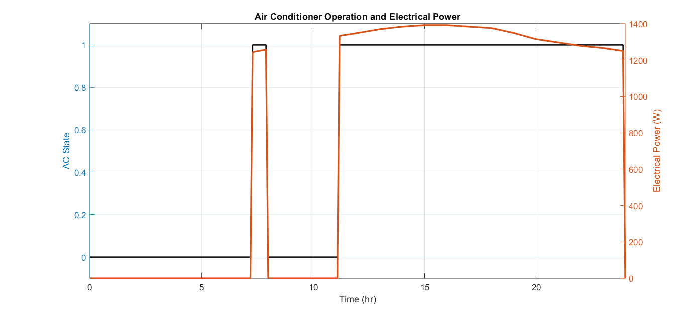
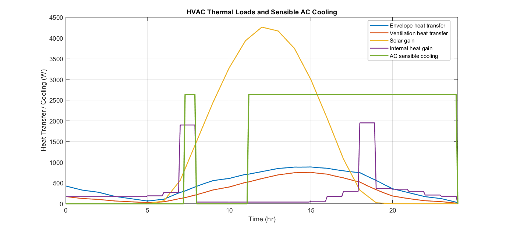
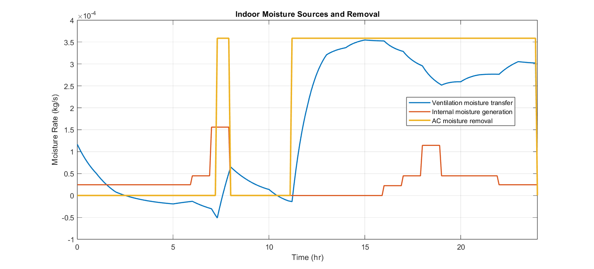
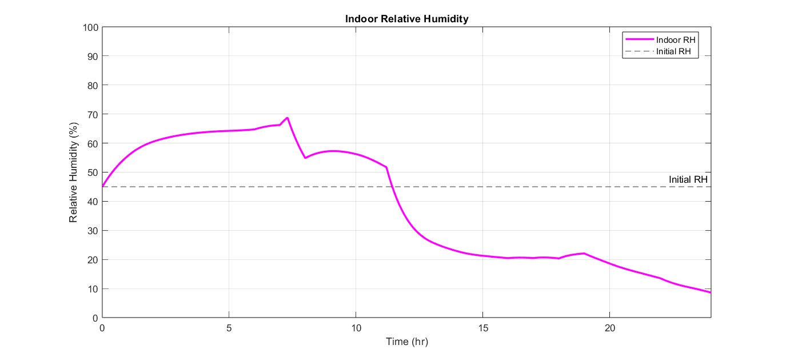

MATLAB / Simulink / Thermal Modeling / Controls
HVAC Thermal Simulation
A transient, single-zone MATLAB/Simulink model of an off-grid cabin's air conditioning system, predicting indoor temperature, humidity, and electrical demand over a 24-hour period to support HVAC sizing and control-strategy decisions.

Project Objective
This project is a transient building and air-conditioning simulation that predicts the thermal and moisture behavior of an off-grid residential cabin over a 24-hour period. The cabin is off-grid by design constraint: there is no utility connection to fall back on, so every watt the AC draws has to come out of a finite solar array and battery bank. That constraint is what shaped the whole model — I wasn't just trying to answer "does the AC keep the cabin cool," I needed to know how much electrical energy that takes, when during the day it's needed, and why, mechanism by mechanism, so that HVAC and solar/battery sizing decisions could be made with real numbers instead of rules of thumb.
Specifically, I wanted the simulation to capture and let me interrogate:
- Cooling load vs. electrical demand — these are different quantities, and conflating them leads to under-sizing a solar/battery system even if the AC itself is correctly sized.
- Where the cooling load actually comes from — envelope conduction, solar gain, ventilation, and internal loads all behave differently over the day, and lumping them into one number hides which one to attack first if the design needs improving.
- Sensible and latent behavior separately — temperature control and moisture control are not the same problem, and an off-grid cabin can be at setpoint temperature while still being uncomfortably humid.
- How weather actually drives the building — wind-driven infiltration, solar radiation, and outdoor humidity all change over the day, and a model built on fixed assumptions can't show how the cabin responds to that variability.
- Realistic controller behavior — thermostat setback and minimum runtime constraints, so the predicted electrical draw reflects how a real thermostat and compressor would behave rather than an idealized on/off signal.
The simulation runs on a six-minute timestep, solving for indoor temperature and humidity ratio throughout the day. Weather data is read from external input files and interpolated onto the simulation time grid, then combined with the building characteristics, occupancy and equipment schedules, moisture generation, and HVAC performance to solve the coupled energy and moisture balances — built to be detailed enough to inform real equipment sizing, while staying transparent enough to trace exactly which physical mechanism is driving the result at any point in the day.
Engineering Approach
My approach was to build the model up from first principles rather than reaching for empirical curve fits or black-box component blocks. Every subsystem is derived from the underlying physics it represents, which meant more work up front but gave me a model where I could always trace a result back to the equation that produced it:
- Energy balance: the indoor temperature state comes directly from a lumped-capacitance energy balance — envelope conductance (UA) driven by wall/roof/floor/window areas and U-values, thermal mass storing and releasing energy, solar gain from radiation and window SHGC, and ventilation heat transfer — integrated rather than approximated.
- Moisture balance: humidity ratio is a true dynamic state, derived from mass conservation of water vapor (internal generation, ventilation transfer, AC latent removal), not backed into from a static comfort assumption.
- Psychrometrics: vapor pressure, relative humidity, and dew point are computed from fundamental thermodynamic relationships (ideal-gas air density, saturation vapor pressure as a function of temperature) rather than pulled from a lookup table, so the model stays consistent even as pressure and temperature vary.
- Ventilation: total air-change rate is built from a baseline infiltration term plus a wind-speed-dependent correction, rather than assumed constant — grounding ventilation in the actual physical driver (pressure difference from wind) instead of a fixed schedule.
- Controller: thermostat behavior is built from real hysteresis logic plus setback and minimum-runtime rules, mirroring how an actual residential thermostat and compressor behave, rather than an idealized instantaneous on/off signal.
I also treated the model as something to be built in deliberate increments rather than all at once. I started from a simplified baseline (fixed ventilation, no thermal mass, constant COP, explicit Euler integration) and added one physical mechanism at a time — thermal mass, solar gain, wind-driven ventilation, variable atmospheric pressure, external occupancy/equipment schedules, temperature-dependent COP, fan power, thermostat setback, minimum runtime, and finally 4th-order Runge-Kutta integration — checking after each addition that the model's behavior changed in the direction the physics predicted. That incremental process is what let me be confident that a given result (say, the humidity dip after the AC kicks on) is coming from the mechanism I think it's coming from, rather than an artifact of the numerical solver or an interaction I hadn't anticipated.
Model Architecture
The model is organized around a central main script that coordinates every other component. It loads parameters and input data, initializes the indoor temperature and humidity states, builds the simulation time grid, and steps through the transient calculation. At each timestep, main pulls the current weather and internal-load conditions, decides whether the air conditioner should run, calculates HVAC cooling and electrical performance, determines ventilation and solar gains, and evaluates the coupled temperature and moisture balances. The resulting state derivatives are integrated using fourth-order Runge-Kutta, which is a meaningful step up in numerical accuracy from the explicit Euler integration used in the model's first version.
Everything else is deliberately modular. The architecture separates into three layers: inputs and parameters (simulation settings, physical constants, air-conditioner specs, weather data, building properties, and operating schedules), physical calculations (heat transfer, moisture transfer, solar gains, ventilation, HVAC operation, and thermostat control), and the numerical solution and results, where the integrated states become the 24-hour indoor temperature and humidity profile. Keeping main as the coordinator while pushing the physics into separate files — weather_script, building_script, loads_script, moisture_script, HVAC_script, and controller_script — means any single subsystem can be modified, debugged, or swapped out without restructuring the rest of the simulation. For example, air_conditioner_parameters isolates the equipment characteristics from the building and weather model entirely, so the same cabin can be re-evaluated against a different HVAC unit just by changing that one file.
Control Strategy
The transient controller lives in a controller_step() function inside main, built on top of standard thermostat hysteresis logic. On top of that baseline, the controller adds two behaviors aimed at realism: occupancy-based thermostat setback, which relaxes the control temperature when the cabin is unoccupied or during scheduled sleeping periods to avoid cooling an empty space, and minimum ON/OFF runtime protection, which prevents the compressor from short-cycling in response to noise near the thermostat thresholds. A separate reference implementation of the base hysteresis logic (controller_script) exists as a standalone version of the fundamental control rule, but the full transient simulation runs through the richer controller_step() logic in main.

Thermal and Moisture Modeling
The cabin is modeled as a well-mixed, single-zone control volume with lumped thermal conductance and capacitance representing the envelope — a step beyond the earlier version of the model, which had effectively no meaningful thermal storage in the building components. That added thermal mass lets the cabin respond gradually to changing outdoor temperature, solar radiation, and internal loads rather than tracking outdoor conditions instantaneously.
Ventilation is calculated dynamically from a baseline air-exchange rate plus a wind-speed-dependent component, replacing a fixed-ACH assumption used previously. Air density is computed from atmospheric pressure and indoor temperature using the ideal-gas relationship, and atmospheric pressure itself is imported and interpolated from weather data rather than held constant, which keeps the ventilation and psychrometric calculations internally consistent. Solar gain is estimated from measured solar radiation combined with window area, SHGC, and orientation factors.

Humidity ratio is tracked as a second dynamic state alongside temperature, driven by internal moisture generation (occupancy, cooking, equipment), moisture carried in through ventilation, and latent moisture removal by the air conditioner.


Results and Validation
Over the simulated 24-hour period, outdoor temperature swings from roughly 24 °C overnight to about 40.3 °C in mid-afternoon, while the indoor temperature is held far tighter — rising gradually to a peak of about 30.3 °C and never approaching the outdoor extreme. Two things stand out in that response. First, the indoor peak lags the outdoor peak by a few hours, which is the thermal mass doing exactly what it was added to do: storing heat during the day and releasing it gradually rather than letting the cabin track outdoor swings in real time. Second, once the AC engages for the afternoon it holds the cabin close to setpoint despite outdoor temperatures nearly 10 °C above the target — direct evidence that the sensible cooling capacity is adequately sized for the modeled envelope and load.

Breaking the sensible cooling requirement into its individual sources answers one of the core questions the model was built to address: what's actually driving the load. Solar gain is by far the dominant term, peaking around 4,200 W near midday — roughly five times larger than envelope or ventilation heat transfer at their own peaks (both under 900 W). Internal heat gain shows up as two short spikes tied to the occupancy/equipment schedule rather than a steady contribution. Practically, that ranking says the single highest-leverage design change for this cabin would be reducing solar gain (better glazing, shading, orientation) rather than tightening envelope insulation further.
The controller result shows the setback, hysteresis, and minimum-runtime logic behaving as intended: a short cycle around hour 7–8, then a full OFF period, then continuous operation from roughly hour 11 through the end of the simulated day as solar and outdoor temperature loads build. Electrical power tracks that state closely, peaking near 1,300 W during the sustained afternoon run — and importantly, that peak is a combination of compressor power (which itself varies with the temperature-dependent COP) plus a constant fan-power addition, which is why the electrical trace isn't a flat step function even while the AC is continuously ON. This is the number that actually matters for off-grid sizing: the cooling load says how much heat has to leave the cabin, but this plot says how much energy the solar/battery system has to supply to do it.
Indoor relative humidity is not imposed directly — it falls out of the dynamically tracked humidity ratio and temperature — and its behavior is the clearest demonstration that temperature control and moisture control aren't the same problem. RH climbs from an initial ~45% to nearly 68% overnight and into the morning, well before the AC ever turns on, simply from internal moisture generation and ventilation-driven humidity ingress. It's only once the AC engages for its sustained afternoon run that RH drops sharply, falling to roughly 10% by the end of the simulated day as latent cooling removes moisture faster than it's being added. A model that only tracked temperature would have completely missed that multi-hour stretch of elevated humidity with the cabin nominally "unoccupied and fine."

The moisture-source breakdown confirms that story at the mechanism level: ventilation moisture transfer is the dominant term for most of the day (and briefly goes negative overnight, meaning the cabin is drying out slightly through ventilation), while AC moisture removal only becomes active — and dominant — once the compressor is running continuously in the afternoon.
Finally, tying ventilation to wind speed rather than a fixed schedule shows a clear, physically sensible relationship: total ACH rises and falls with wind speed almost in lockstep, peaking near 1.3 ACH around the same midday period when wind speed itself peaks near 5.7 m/s. That's a direct, visible answer to one of the model's core objectives — showing that weather doesn't just act on the cabin through temperature and solar radiation, it also actively changes how much outdoor air is getting in, which in turn changes both the sensible and latent load the AC has to overcome.
Taken together, the results directly answer the questions the objective set out to answer: solar gain is the largest and most controllable sensible load; humidity behaves on its own timeline independent of temperature and can drift for hours before the AC ever engages; wind-driven ventilation is a real, time-varying contributor to both loads rather than a background assumption; and the electrical power trace — not just the AC on/off state — is what an off-grid solar/battery system actually has to be sized against.
What I Learned
- Cooling load and electrical demand are genuinely different design questions. It's easy to size an AC around peak cooling load (W) and stop there — this project made clear that for an off-grid system, the electrical power trace (which depends on COP and fan load, and isn't flat even during continuous operation) is the number that actually constrains the design.
- Temperature and humidity have to be modeled as coupled but distinct states. Before I let humidity ratio be its own dynamic state, I was implicitly assuming the cabin's moisture condition tracked temperature control — the RH result showing a multi-hour rise before the AC ever engages was the moment that assumption broke, and it changed how I thought about latent vs. sensible cooling capacity from then on.
- Building from first principles makes debugging tractable. When an early version of the model produced a humidity spike that didn't make physical sense, being able to trace it back through an actual mass-balance equation (rather than a black-box block) let me find the error in a sign convention on ventilation moisture transfer in minutes instead of hours.
- Incremental validation matters more than I expected. Adding thermal mass, then solar gain, then wind-driven ventilation one at a time — and checking each change moved the results in the physically expected direction — caught several bugs early that would have been much harder to isolate if I'd built the full model at once and then tried to validate it as a whole.
- Modular architecture pays off during iteration, not just at the end. Separating equipment characteristics (
air_conditioner_parameters) from building physics (building_script) meant I could test how sensitive the results were to AC sizing without touching the building model at all — which is exactly the kind of what-if analysis this project needed to be useful for real sizing decisions. - A simplified model still has to be honest about its limits. Getting physically reasonable-looking curves out of the simulation was not the same as validating it. Documenting explicitly where the model simplifies — solar position, infiltration physics, refrigerant cycle behavior — was as important as the modeling itself, because it's what tells a reader (or future me) how much to trust a given number.
Limitations and Future Improvements
The model rests on a number of simplifying assumptions, and it's worth being direct about where the biggest sources of uncertainty are:
- Weather resolution: source weather data is hourly, interpolated onto the six-minute simulation grid — short-duration fluctuations in wind, solar radiation, or temperature between measurements aren't captured.
- Solar gain: estimated from radiation, window area, SHGC, and orientation factors, without a detailed solar-position calculation — no solar altitude/azimuth, incidence angle, shading, or overhangs.
- Infiltration: the baseline-plus-wind ACH model is more realistic than a fixed rate, but still simplified relative to a full pressure-network infiltration model that would account for wind direction, stack effect, and building leakage in detail.
- Thermal mass: represented with lumped capacitance rather than a multi-node model, so the simulation captures overall thermal inertia but not the individual temperatures of walls, roof, floor, and furnishings.
- Occupancy and equipment schedules: assumed rather than measured, so calculated internal loads are only as good as those assumptions.
- AC performance: COP varies linearly with outdoor temperature above rated conditions, which is more realistic than a constant COP but still a simplification of a full manufacturer performance map.
- Refrigerant flow: approximated from a simplified enthalpy relationship rather than a full vapor-compression cycle model.
Future versions would benefit most from measured cabin data for validation, higher-resolution weather input, a proper solar-position and shading model, a pressure-based infiltration model, a multi-node building thermal model, and manufacturer-specific HVAC performance maps. Even with those simplifications, the current model is a substantial step up from its predecessor — replacing Euler integration with 4th-order Runge-Kutta, adding building thermal mass, solar gain, wind-driven ventilation, variable atmospheric pressure, external occupancy/equipment schedules, temperature-dependent COP, fan power, thermostat setback, and minimum-runtime protection — and it's structured so each of those subsystems can keep improving independently.